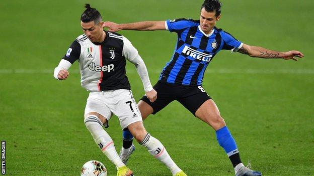

FOOTBALL

ກິລາບານເຕະ
ເປັນກິລາປະເພດທີມຫລິ້ນກັນເອງເພື່ອເກັບຄະເເນນຫມາກບານໃນໂກນຂອງຝ່າຍກົງກັນຂ້າມຄືເຮົາເອີ້ນວ່າ"ປະຕູ"ເຊິ່ງທັງສອງທີມມັກຈະມີຜູ້ຫລິ້ນ11ຄົນໃນຕໍາເເຫນ່ງຕ່າງໆໃນສະຫນາມ
-ເປົ້າຫມາຍຫລັກຂອງເເຕ່ລະຕໍາເເຫນ່ງຄືການປ້ອງກັນບໍ່ໃຫ້ທີມກົງກັນຂ້າມຍິງເຂົ້າໂກນຈົນໄດ້ປະຕູ
-ມັນເປັນເກມເເບບກົນລະຍຸດເເລ້ວຕ້ອງໃຊ້ການດີ້ນຮົນ ເເລະ ທັກສະຂອງຜູ້ຫລີ້ນຕ້ອງເຂົ້າສະກັດ ເເລະ ຕໍ່ສູ້ເພື່ອໃຫ້ໄດ້ບານຈາກທີມກົງກັນຂ້າມເພື່ອພະຍາຍາມເກັບປະຕູໃຫ້ທີມຂອງຕົນ.

ປະໂຫຍດຂອງກິລາບານເຕະ
1. ປັບປຸງສຸຂະພາບຫົວໃຈ ເເລະ ຫລອດເລືອດ.
2. ຫລຸດໄຂມັນ ເເລະ ປັບສີຂອງກ້າມເນື້ອ.
3.ສ້າງຄວາມເເຂງເເຮງໃຫ້ກ້າມເນື້ອ.
4.ເພີ່ມຄວາມເເຂງເເຮງໃຫ້ກະດູກ.
5. ສົ່ງເສີມການເຮັດວຽກເປັນທີມ ເເລະ ເເບ່ງປັນທັກສະເຊິ່ງກັນແລະກັນ.
6. ເພີ່ມການທໍາງານຂອງສະຫມອງດ້ານປັນຍາ.
6.ເພີ່ມການກະຊັບມິດຕະພາບ.